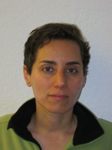
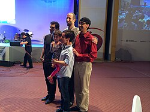
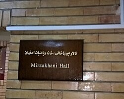

Maryam Mirzakhani | |
|---|---|
مریم میرزاخانی | |
 | |
| Born | 12 May 1977[3] |
| Died | 14 July 2017 (aged 40) Stanford, California, U.S. |
Resting place | Los Gatos Memorial Park |
| Education | |
| Spouse | |
| Children | 1 |
| Awards |
|
| Scientific career | |
| Fields | Mathematics |
| Institutions | |
| Thesis | Simple geodesics on hyperbolic surfaces and the volume of the moduli space of curves (2004) |
| Curtis T. McMullen[1] | |
Other academic advisors | Siavash Shahshahani, Ebadollah S. Mahmoodian[2] |
{kind=link}
Maryam Mirzakhani (Persian: مریم میرزاخانی, pronounced [mæɾˈjæm miːɾzɑːxɑːˈniː]; 12 May 1977 – 14 July 2017) was an Iranian[4][5] mathematician and a professor of mathematics at Stanford University.[6][7] Her research focused on hyperbolic geometry, dynamical systems, complex analysis, and topology. In 2014, she was awarded the Fields Medal for her work in "the dynamics and geometry of Riemann surfaces and their moduli spaces", becoming the first woman and the first Iranian citizen to win the prize.[8][9] Along with the Fields Medal, her work earned numerous honors, including the Blumenthal Award, the Satter Prize, and the Clay Research Award.
Born and raised in Tehran, Iran, Mirzakhani studied mathematics at Sharif University of Technology, graduating in 1999 before earning her doctorate from Harvard University in 2004 under the supervision of Curtis T. McMullen. She subsequently held positions at Princeton University and Stanford University, becoming a full professor at Stanford in 2009. Through her research in the 2000s and 2010s, Mirzakhani made major contributions to the understanding of hyperbolic surfaces, Teichmüller dynamics, and the geometry of moduli spaces. In colloboration with Alex Eskin and later Amir Mohammadi, she achieved breakthrough results on the dynamics of moduli spaces that became known as the "magic wand theorem".[10]
Mirzakhani died from breast cancer on 14 July 2017 at the age of 40.[11] Following her death, several initiatives and awards were established in her memory, including the Maryam Mirzakhani New Frontiers Prize and the 12 May Initiative, both of which aim to promote the participation of women in mathematics.
Early life and education
Mirzakhani was born on 12 May 1977[12][3] in Tehran, Iran.[13] As a child, she attended Tehran Farzanegan School, part of the National Organization for Development of Exceptional Talents (NODET). In her junior and senior years of high school, she won the gold medal for mathematics in the Iranian National Olympiad, thus allowing her to bypass the national college entrance exam.[14] In 1994, Mirzakhani became the first Iranian woman to win a gold medal at the International Mathematical Olympiad in Hong Kong, scoring 41 out of 42 points.[15] The following year, in Toronto, she became the first Iranian to achieve the full score and to win two gold medals in the International Mathematical Olympiad.[16][17] Later in her life, she collaborated with friend, colleague, and Olympiad silver medalist Roya Beheshti Zavareh (Persian: رؤیا بهشتی زواره) on their book Elementary Number Theory, Challenging Problems (in Persian), which was published in 1999.[14] Mirzakhani and Zavareh together were the first women to compete in the Iranian National Mathematical Olympiad and won gold and silver medals in 1995, respectively.
On 17 March 1998, after attending a conference consisting of gifted individuals and former Olympiad competitors, Mirzakhani and Zavareh, along with other attendees, boarded a bus in Ahvaz en route to Tehran. The bus fell off a cliff, killing seven of the passengers, all Sharif University students, in what is remembered as a national tragedy in Iran. Mirzakhani and Zavareh were two of the few survivors.[18]
In 1999, she obtained a Bachelor of Science in mathematics from the Sharif University of Technology. During her time there, she developed a simpler proof of a theorem of Schur.[19][20] She then went to the United States for graduate work, earning a PhD in 2004 from Harvard University, where she worked under the supervision of the Fields Medalist, Curtis T. McMullen.[21] At Harvard, she is said to have been "distinguished by determination and relentless questioning". She used to take her class notes in her native language Persian.[22][23]
Career
Mirzakhani was a 2004 research fellow of the Clay Mathematics Institute and a professor at Princeton University.[24] In 2009, she became a professor at Stanford University.[25][26][27]
Research work
Mirzakhani made several contributions to the theory of moduli spaces of Riemann surfaces. Mirzakhani's early work solved the problem of counting simple closed geodesics on hyperbolic Riemann surfaces by finding a relationship to volume calculations on moduli space. Geodesics are the natural generalization of the idea of a "straight line" to "curved spaces". Slightly more formally, a curve is a geodesic if no slight deformation can make it shorter. Closed geodesics are geodesics which are also closed curves—that is, they are curves that close up into loops. A closed geodesic is simple if it does not cross itself.[28]
A previous result, known as the "prime number theorem for geodesics", established that the number of closed geodesics of length less than grows exponentially with – it is asymptotic to . However, the analogous counting problem for simple closed geodesics remained open, despite being "the key object to unlocking the structure and geometry of the whole surface," according to University of Chicago topologist Benson Farb.[29] Mirzakhani's 2004 PhD thesis solved this problem, showing that the number of simple closed geodesics of length less than is polynomial in . Explicitly, it is asymptotic to , where is the genus (roughly, the number of "holes") and is a constant depending on the hyperbolic structure. This result can be seen as a generalization of the theorem of the three geodesics for spherical surfaces.[30][31]
Mirzakhani solved this counting problem by relating it to the problem of computing volumes in moduli space—a space whose points correspond to different complex structures on a surface genus . In her thesis, Mirzakhani found a volume formula for the moduli space of bordered Riemann surfaces of genus with geodesic boundary components. From this formula followed the counting for simple closed geodesics mentioned above, as well as a number of other results. This led her to obtain a new proof for the formula discovered by Edward Witten and Maxim Kontsevich on the intersection numbers of tautological classes on moduli space.[6][32]
Her subsequent work focused on Teichmüller dynamics of moduli space. In particular, she was able to prove the long-standing conjecture that William Thurston's earthquake flow on Teichmüller space is ergodic.[33] One can construct a simple earthquake map by cutting a surface along a finite number of disjoint simple closed geodesics, sliding the edges of each of these cuts past each other by some amount, and closing the surface back up. One can imagine the surface being cut by strike-slip faults. An earthquake is a sort of limit of simple earthquakes, where one has an infinite number of geodesics, and instead of attaching a positive real number to each geodesic, one puts a measure on them.
In 2014, with Alex Eskin and with input from Amir Mohammadi, Mirzakhani proved that complex geodesics and their closures in moduli space are surprisingly regular, rather than irregular or fractal.[34][35] The closures of complex geodesics are algebraic objects defined in terms of polynomials and therefore, they have certain rigidity properties, which is analogous to a celebrated result that Marina Ratner arrived at during the 1990s.[35] The International Mathematical Union said in its press release that "It is astounding to find that the rigidity in homogeneous spaces has an echo in the inhomogeneous world of moduli space."[35]
Awarding of Fields Medal
{kind=link}

Mirzakhani was awarded the Fields Medal in 2014 for "her outstanding contributions to the dynamics and geometry of Riemann surfaces and their moduli spaces".[36] The award was made in Seoul at the International Congress of Mathematicians on 13 August.[37] At the time of the award, Jordan Ellenberg explained her research to a popular audience:
[Her] work expertly blends dynamics with geometry. Among other things, she studies billiards. But now, in a move very characteristic of modern mathematics, it gets kind of meta: She considers not just one billiard table, but the universe of all possible billiard tables. And the kind of dynamics she studies doesn't directly concern the motion of the billiards on the table, but instead a transformation of the billiard table itself, which is changing its shape in a rule-governed way; if you like, the table itself moves like a strange planet around the universe of all possible tables ... This isn't the kind of thing you do to win at pool, but it's the kind of thing you do to win a Fields Medal. And it's what you need to do in order to expose the dynamics at the heart of geometry; for there's no question that they're there.[38]
In 2014, President Hassan Rouhani of Iran congratulated her for winning the award.[39]
Personal life
In 2008, Mirzakhani married Jan Vondrák, a Czech theoretical computer scientist and applied mathematician who is a professor at Stanford University.[40][41] They had a daughter.[42] Mirzakhani lived in Palo Alto, California.[43] Mirzakhani described herself as a "slow" mathematician, saying that "you have to spend some energy and effort to see the beauty of math." To solve problems, Mirzakhani would draw doodles on sheets of paper and write mathematical formulas around the drawings. Her daughter described her mother's work as "painting".[22][44]
Mirzakhani declared:
I don't have any particular recipe [for developing new proofs] ... It is like being lost in a jungle and trying to use all the knowledge that you can gather to come up with some new tricks, and with some luck, you might find a way out.[22]
Death and legacy
Mirzakhani was diagnosed with breast cancer in 2013.[22] In 2016, the cancer spread to her bones and liver,[22][45] and she died on 14 July 2017 at the age of 40 at Stanford Hospital in Stanford, California.[22][46]
Iranian president Hassan Rouhani and other officials offered their condolences and praised Mirzakhani's scientific achievements. Rouhani said in his message that "the unprecedented brilliance of this creative scientist and modest human being, who made Iran's name resonate in the world's scientific forums, was a turning point in showing the great will of Iranian women and young people on the path towards reaching the peaks of glory and in various international arenas."[22]
Upon her death, several Iranian newspapers, along with President Hassan Rouhani, broke taboo and published photographs of Mirzakhani with her hair uncovered. Although most newspapers used photographs with a dark background, digital manipulation, and even paintings to "hide" her hair,[8][47] this gesture was widely noted in the Western press and on social media.[48][49]
Mirzakhani's death has also renewed debates within Iran regarding matrilineal citizenship for children of mixed-nationality parentage; Fars News Agency reported that, subsequent to Mirzakhani's death, 60 Iranian MPs urged the speeding up of an amendment to a law that would allow children of Iranian mothers married to foreigners to be given Iranian nationality, in order to make it easier for Mirzakhani's daughter to visit Iran.[8][48]
{kind=link}

Numerous obituaries and tributes were published in the days following Mirzakhani's death.[50][51] As a result of advocacy carried out by the Women's Committee within the Iranian Mathematical Society (Persian: کمیته بانوان انجمن ریاضی ایران), the International Council for Science agreed to declare Mirzakhani's birthday, 12 May, as International Women in Mathematics Day in respect of her memory.[52][53]
Various establishments have also been named after Mirzakhani to honor her life and achievements. In 2017, Farzanegan High School – the high school Mirzakhani formerly attended – named their amphitheater and library after her. Additionally, Sharif University of Technology, the institute wherein Mirzakhani obtained her bachelor's, has since named their main library in the College of Mathematics after her. Further, the House of Mathematics in Isfahan, in collaboration with the mayor, named a conference hall in the city after her.[54]
In 2014, students at the University of Oxford founded the Mirzakhani Society, a society for women and non-binary students studying mathematics at the University of Oxford. Mirzakhani met the society in September 2015, when she visited Oxford.[55]
In 2016, Mirzakhani was made a member of the National Academy of Sciences (of the United States), making her the first Iranian woman to be officially accepted as a member of the academy.[56]
On 2 February 2018, Satellogic, a high-resolution Earth observation imaging and analytics company, launched a ÑuSat type micro-satellite named in honor of Mirzakhani.[57]
On 4 November 2019, The Breakthrough Prize Foundation announced that the Maryam Mirzakhani New Frontiers Prize has been created to be awarded to outstanding women in the field of mathematics each year. The $50,000 award will be presented to early-career mathematicians who have completed their PhDs within the past two years.[58][59]
In February 2020, on International Day of Women and Girls in STEM, Mirzakhani was honored by UN Women as one of seven female scientists dead or alive who have shaped the world.[60]
In 2020, George Csicsery featured her in the documentary film Secrets of the Surface: The Mathematical Vision of Maryam Mirzakhani.[61][62]
The 12 May Initiative was created in Mirzakhani's honor[12] to celebrate women in mathematics. The Initiative is coordinated by the European Women in Mathematics, Association for Women in Mathematics, African Women in Mathematics Association, Colectivo de Mujeres Matemáticas de Chile, and the Women's Committee of the Iranian Mathematical Society. In 2020, 152 events were held.[63]
In 2022, following a £2.48m donation from XTX Markets, the University of Oxford launched the Maryam Mirzakhani Scholarships, which provide support for female mathematicians pursuing doctoral studies at the university.[64]
On 8 March 2022, the Ecole Polytechnique Fédérale de Lausanne named one of its streets in honor of Mirzakhani.[65]
Awards and honors
- Gold medal. International Mathematical Olympiad (Hong Kong 1994)[16]
- Gold medal. International Mathematical Olympiad (Canada 1995)[16]
- IPM Fellowship, Tehran, Iran, 1995–1999[4]
- Merit fellowship Harvard University, 2003[4]
- Harvard Junior Fellowship Harvard University, 2003[4]
- Clay Mathematics Institute Research Fellow 2004[66]
- Popular Science's 2005 "Brilliant 10", one of the top 10 young minds who have pushed their fields in innovative directions.[67]
- AMS Blumenthal Award 2009[68]
- Invited to talk at the International Congress of Mathematicians in 2010, on the topic of "Topology and Dynamical Systems & ODE"[69]
- The 2013 AMS Ruth Lyttle Satter Prize in Mathematics.[70]
- Simons Investigator Award 2013[71]
- Named one of Nature magazine's ten "people who mattered" of 2014[72]
- Clay Research Award 2014[73]
- Fields Medal 2014[9][74]
- Elected foreign associate to the French Academy of Sciences in 2015[75]
- Elected to the American Philosophical Society in 2015[76]
- National Academy of Sciences 2016[77]
- Elected to the American Academy of Arts and Sciences in 2017[78]
- Asteroid 321357 Mirzakhani was named in her memory.[79] The official naming citation was published by the Minor Planet Center (MPC 108698).[80]
- In 2024 the International Astronomical Union named the lunar crater Mirzakhani in her honor.[81]
- Mirzakhani has an Erdős number of 3.[82]
See also
References
- ^ Jonathan, Webb (2014). "First female winner for Fields maths medal". BBC News. Archived from the original on 13 August 2014. Retrieved 13 August 2014.
- ^ "Private Funeral of Professor Mirzakhani to be held in the United States". Iranian Students News Agency (in Persian). 19 July 2017. 96042715699. Archived from the original on 20 July 2017. Retrieved 19 July 2017.
- ^ a b O'Connor, John; Robertson, Edmund (August 2017). "Maryam Mirzakhani". MacTutor History of Mathematics Archive. Retrieved 3 May 2021.
- ^ a b c d Mirzakhani, Maryam. "Curriculum Vitae" (PDF). Archived from the original (PDF) on 24 November 2005. Retrieved 13 August 2014.
- ^ وبسایت رسمی مریم میرزاخانی. mmirzakhani.com (in Persian). Archived from the original on 8 September 2018. Retrieved 6 September 2018.
- ^ a b Mirzakhani, Maryam (2007). "Weil-Petersson volumes and intersection theory on the moduli space of curves" (PDF). Journal of the American Mathematical Society. 20 (1): 1–23. Bibcode:2007JAMS...20....1M. doi:10.1090/S0894-0347-06-00526-1. MR 2257394. Archived (PDF) from the original on 4 March 2016. Retrieved 2 September 2015.
- ^ Mirzakhani, Maryam (January 2007). "Simple geodesics and Weil-Petersson volumes of moduli spaces of bordered Riemann surfaces". Inventiones Mathematicae. 167 (1): 179–222. Bibcode:2006InMat.167..179M. doi:10.1007/s00222-006-0013-2. ISSN 1432-1297. S2CID 44008647.
- ^ a b c Dehghan, Saeed Kamali (16 July 2017). "Maryam Mirzakhani: Iranian newspapers break hijab taboo in tributes". The Guardian. ISSN 0261-3077. Archived from the original on 18 July 2017. Retrieved 18 July 2017.
- ^ a b "IMU Prizes 2014". International Mathematical Union. Archived from the original on 12 August 2014. Retrieved 12 August 2014.
- ^ Rafi, Kasra (2017). "Maryam Mirzakhani (1977–2017)". Nature. 549 (7670): 32. Bibcode:2017Natur.549...32R. doi:10.1038/549032a. ISSN 0028-0836. PMID 28880285.
- ^ "Maryam Mirzakhani's Pioneering Mathematical Legacy". The New Yorker. 17 July 2017. Archived from the original on 17 July 2017. Retrieved 18 July 2017.
- ^ a b "Why May12?". Celebrating Women in Mathematics. Retrieved 3 May 2021.
- ^ Bridson, Martin (19 July 2017). "Maryam Mirzakhani obituary". The Guardian. Retrieved 3 May 2021.
- ^ a b "ریاضی به درست فکرکردن کمک میکند". Donya-e-Eghtesaad. 21 August 2014. Archived from the original on 2 April 2019. Retrieved 2 December 2018.
- ^ "The 57th International Mathematical Olympiad Successfully Completed in Hong Kong". PrNewsWire. 15 July 2016. Archived from the original on 24 July 2016. Retrieved 15 July 2016.
- ^ a b c Maryam Mirzakhani's results at International Mathematical Olympiad
- ^ "Iranian woman wins maths' top prize". New Scientist. 12 August 2014. Archived from the original on 13 August 2014. Retrieved 13 August 2014.
- ^ "بازخوانی یک پرونده کهنه". Sharif University of Technology Newspaper. Retrieved 3 December 2018.
{{cite news}}: CS1 maint: deprecated archival service (link) - ^ Mirzakhani, M. (1998). "A Simple Proof of a Theorem of Schur" (PDF). The American Mathematical Monthly. 105 (3): 260–262. doi:10.1080/00029890.1998.12004879. ISSN 0002-9890.
- ^ Karamzadeh, Omid Ali Shahni. "آهسته و پیوسته در راهی دشوار". Sharq News. Retrieved 2 December 2018.
- ^ "Maryam Mirzakhani". The Mathematics Genealogy Project. Genealogy.math.ndsu.nodak.edu. Archived from the original on 9 May 2016. Retrieved 21 October 2017.
- ^ a b c d e f g Myers, Andrew; Carey, Bjorn (15 July 2017). "Maryam Mirzakhani, Stanford mathematician and Fields Medal winner, dies". Stanford News. Archived from the original on 11 October 2017. Retrieved 21 October 2017.
- ^ Ahmed Khan, Sameen (December 2017). "Fields Medallist Maryam Mirzakhani" (PDF). Vol. 7, no. 1. Asia Pacific Mathematics Newsletters. p. 37. Retrieved 2 April 2022.
She noted the responses of her professors in her native language, Persian.
- ^ Maryam Mirzakhani's publications indexed by the Scopus bibliographic database. (subscription required)
- ^ team, I. B. R. (25 May 2024). "The Legacy of Maryam Mirzakhani: A Mathematician's Journey". Iran Brands Review. Archived from the original on 27 May 2024. Retrieved 27 May 2024.
- ^ Sample, Ian (13 August 2014). "Fields Medal mathematics prize won by woman for first time in its history". The Guardian. Archived from the original on 8 June 2016. Retrieved 9 June 2016.
- ^ Juris, Yvonne (16 July 2017). "Maryam Mirzakhani, first woman to receive the prestigious Fields Medal, dies at the age of 40 after breast cancer battle". People Magazine. Archived from the original on 16 July 2017. Retrieved 16 July 2017.
- ^ Chas, Moira (24 July 2017). "The Beautiful Mathematical Explorations of Maryam Mirzakhani". Quanta Magazine. Retrieved 21 June 2022.
- ^ "Maryam Mirzakhani Is First Woman Fields Medalist | Quanta Magazine". Quanta Magazine. Archived from the original on 11 September 2018. Retrieved 25 September 2018.
- ^ Mirzakhani, Maryam (2008). "Growth of the number of simple closed geodesics on hyperbolic surfaces". Annals of Mathematics. 168 (1): 97–125. doi:10.4007/annals.2008.168.97. MR 2415399. Zbl 1177.37036.
- ^ Kehoe, Elaine (April 2013). "Notices of the AMS" (PDF). Archived (PDF) from the original on 6 January 2018. Retrieved 25 September 2018.
- ^ "2014 Fields Medals" (PDF). Notices of the AMS. 61 (9): 1079–1081. October 2014. Archived (PDF) from the original on 5 June 2018. Retrieved 25 September 2018.
- ^ Mirzakhani, M. (2008). "Ergodic Theory of the Earthquake Flow". International Mathematics Research Notices. 2008. doi:10.1093/imrn/rnm116. MR 2416997.
- ^ Eskin, Alex; Mirzakhani, Maryam; Mohammadi, Amir (2015). "Isolation, equidistribution, and orbit closures for the SL(2,R) action on moduli space". Annals of Mathematics. 182 (2): 673–721. arXiv:1305.3015. doi:10.4007/annals.2015.182.2.7. S2CID 8229920.
- ^ a b c "The Work of Maryam Mirzakhani" (PDF) (Press release). International Mathematics Union. Archived (PDF) from the original on 3 March 2016. Retrieved 15 August 2014.
- ^ "IMU Prizes 2014 citations". International Mathematical Union. Archived from the original on 12 August 2014. Retrieved 12 August 2014.
- ^ Carey, Bjorn (12 August 2014). "Stanford's Maryam Mirzakhani wins Fields Medal". Stanford News. Archived from the original on 13 August 2014. Retrieved 13 August 2014.
- ^ Ellenberg, Jordan (13 August 2014). "Math Is Getting Dynamic". Slate. Archived from the original on 14 August 2014. Retrieved 14 August 2014.
- ^ "President hails Prof Mirzakhani, winner of topmost world math prize". Official Site of the President of The Islamic Republic of Iran. 13 August 2014. Archived from the original on 19 August 2014. Retrieved 19 August 2014.
- ^ "بیوگرافی مریم میرزاخانی؛ ستاره پرفروغ دنیای ریاضیات [Biography Maryam Mirzakhani; the best-selling star of the world of mathematics]" (in Persian). Zoomit. 24 July 2011. Archived from the original on 20 July 2017. Retrieved 19 July 2017.
- ^ "Jan Vondrák, CV" (PDF). Stanford University. Archived (PDF) from the original on 14 August 2014. Retrieved 14 July 2017.
- ^ Klarreich, Erica (12 August 2014). "2014 Fields Medal and Nevanlinna Prize - A Tenacious Explorer of Abstract Surfaces". Quanta Magazine.
- ^ Putic, George (13 August 2014). "Iranian-American Woman Wins Top Mathematics Prize". Voice of America. Archived from the original on 29 July 2017. Retrieved 18 July 2017.
- ^ Jacobson, Howard (29 July 2017). "The world has lost a great artist in mathematician Maryam Mirzakhani". The Guardian. Archived from the original on 15 September 2017. Retrieved 21 October 2017.
- ^ "Sorrow as Maryam Mirzakhani, the first woman to win mathematics' Fields Medal, dies aged 40". The Telegraph. Agence France-Presse. 15 July 2017. Archived from the original on 15 July 2017. Retrieved 15 July 2017.
- ^ "Maryam Mirzakhani died" (in Persian). Mehr news Agency. 15 July 2017. Archived from the original on 17 January 2020. Retrieved 23 March 2020.
- ^ Samuel, Sigal. "Why Iran Broke Its Strict Hijab Rules for the 'Queen of Math'". The Atlantic. Archived from the original on 18 July 2017. Retrieved 18 July 2017.
- ^ a b "Iranian Media Break Hijab Taboo in Tributes to Maryam Mirzakhani". thewire.in. 17 July 2017. Archived from the original on 17 July 2017.
- ^ "Iranian Press Flouts Hijab Rules in Death Tributes To Trailblazing Maths Genius". HuffPost UK. 17 July 2017. Archived from the original on 17 July 2017. Retrieved 19 July 2017.
- ^ "A Tribute to Maryam Mirzakhani". American Mathematical Society. 18 July 2017. Archived from the original on 3 August 2017. Retrieved 3 August 2017.
- ^ Roberts, Siobhan (17 July 2017). "Maryam Mirzakhani's Pioneering Mathematical Legacy". The New Yorker. Archived from the original on 3 August 2017. Retrieved 3 August 2017.
- ^ "انتخاب روز تولد مریم میرزاخانی بعنوان روز زنان در ریاضیات در جهان". Iranian Students' News Agency. 14 August 2018. Archived from the original on 24 September 2018. Retrieved 2 December 2018.
- ^ "22 اردیبهشت ، روز جهانی زنان در ریاضیات". Asemooni. 2018. Archived from the original on 16 December 2018. Retrieved 2 December 2018.
- ^ The House of Mathematics Committee in Isfahan. "Zجلسه هیئت امنا خانه ریاضیات اصفهان با حضور جناب آقای دکترمهدی جمالینژاد شهردار محترم اصفهان". Math House Isfahan. Retrieved 3 December 2018.
- ^ "Mirzakhani Society | Oxford". Mirzakhani Society. Archived from the original on 3 August 2019. Retrieved 3 August 2019.
- ^ National Academy of Sciences. "Maryam Mirzakhani". National Academy of Sciences. Archived from the original on 26 November 2018. Retrieved 3 December 2018.
- ^ "China lofts earthquake research craft with cluster of smaller satellites – Spaceflight Now". spaceflightnow.com. Archived from the original on 3 February 2018. Retrieved 4 February 2018.
- ^ "Breakthrough Prize – Breakthrough Prize Foundation Announces Maryam Mirzakhani New Frontiers Prize for Women Mathematicians". breakthroughprize.org. Archived from the original on 8 November 2019. Retrieved 8 November 2019.
- ^ Powers, Anna. "The Breakthrough Prize In Mathematics Named After Maryam Mirzakhani, A Famed Female Mathematician". Forbes. Archived from the original on 8 November 2019. Retrieved 8 November 2019.
- ^ "Devoted to discovery: seven women scientists who have shaped our world". UN Women. 7 February 2020. Retrieved 4 June 2020.
- ^ Secrets of the Surface: The Mathematical Vision of Maryam Mirzakhani on IMdB
- ^ "Secrets of the Surface The Mathematical Vision of Maryam Mirzakhani". YouTube. 24 March 2022. Retrieved 11 September 2022.
- ^ "Second edition 2020 | May12". may12.womeninmaths.org. Retrieved 15 January 2021.
- ^ "New Oxford mathematics scholarship enabled by founding and principal donor XTX Markets". University of Oxford. 5 December 2022.
- ^ Colle, Emmanuelle Marendaz (8 March 2022). "Seven distinguished women scientists get their place on the EPFL map". EPFL News.
- ^ "Interview with Research Fellow Maryam Mirzakhani" (PDF). Oxford University. 2008. Archived (PDF) from the original on 27 August 2014. Retrieved 14 August 2014.
- ^ Newhall, Marissa (13 September 2005). "'Brilliant' minds honored". USA Today. Archived from the original on 18 July 2016. Retrieved 2 December 2018.
- ^ "Maryam Mirzakhani Receives 2009 Blumenthal Award". American Mathematical Society. 6 November 2009.
- ^ "ICM Plenary and Invited Speakers since 1897". International Congress of Mathematicians. Archived from the original on 8 November 2017. Retrieved 13 August 2014.
- ^ Kehoe, Elaine (April 2013). "2013 Satter Prize" (PDF). Notices of the AMS. 60 (4): 490–491. doi:10.1090/noti969.
- ^ "2013 Investigators Awardees: Maryam Mirzakhani, Ph.D., Stanford University". Simons Foundation. Archived from the original on 4 August 2017.
- ^ Gibney, E.; Leford, H.; Lok, C.; Hayden, E.C.; Cowen, R.; Klarreich, E.; Reardon, S.; Padma, T.V.; Cyranoski, D.; Callaway, E. (18 December 2014). "Nature's 10 Ten people who mattered this year". Nature. 516 (7531): 311–319. Bibcode:2014Natur.516..311.. doi:10.1038/516311a. PMID 25519114.
- ^ "2014 Clay Research Awards – Clay Mathematics Institute". Claymath.org. Archived from the original on 25 July 2014. Retrieved 21 October 2017.
- ^ Larousserie, David (12 August 2014). "Médaille Fields de mathématiques : une femme promue pour la première fois". Le Monde (in French). Archived from the original on 12 August 2014. Retrieved 13 August 2014.
- ^ "Quinze nouveaux associés étrangers à l'Académie des sciences" (PDF). Institute de France Académie des Sciences. Archived (PDF) from the original on 28 July 2017. Retrieved 16 July 2017.
- ^ Newly Elected, American Philosophical Society, April 2015, archived from the original on 16 August 2015, retrieved 28 August 2015
- ^ "National Academy of Sciences Members and Foreign Associates Elected". Archived from the original on 6 May 2016. Retrieved 5 May 2016.
- ^ Maryam Mirzakhani elected to American Academy of Arts and Sciences, Department of Mathematics, Stanford University, May 2017, archived from the original on 11 June 2017, retrieved 6 May 2017
- ^ "321357 Mirzakhani (2009 MM)". Minor Planet Center. Retrieved 6 February 2018.
- ^ "MPC/MPO/MPS Archive". Minor Planet Center. Archived from the original on 5 March 2019. Retrieved 6 February 2018.
- ^ "Planetary Names". planetarynames.wr.usgs.gov. Retrieved 5 March 2024.
- ^ "Collaboration paths to Paul Erdős". The Erdős Number Project. 19 October 2022. Archived from the original on 14 February 2017.
External links
- Maryam Mirzakhani publications indexed by Google Scholar
- Official Website of Maryam Mirzakhani (in Persian)
- "Maryam Mirzakhani's work on Riemann surfaces explained in simple terms". Matific. 14 August 2014. Retrieved 18 August 2014.
- McMullen, Curtis (14 August 2014). "The work of Maryam Mirzakhani" (PDF). Harvard University. Retrieved 18 August 2017.